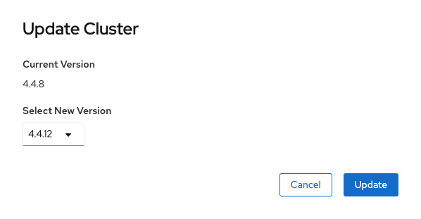

Supported customer update strategy for version 4 clusters
Update Information
In OpenShift version 4, updates of the cluster and operating system of the nodes have been exposed to the customer through the cluster. You can update clusters through the UI and the cluster will then deal with updating the relevant operator components and the OS version of the RHCOS nodes running as control planes, infras and workers. The OS version of the nodes is tied to the version of the cluster and is thoroughly tested by Red Hat pipelines prior to release.
Supported Strategy
There are three update channels available to choose from:
Stable - This is the recommended channel for production clusters. Updates are released to this channel after data has been collected by Red Hat from customers running updates from the fast channel and stability of the updates has been confirmed.
Fast - This channel is fully supported. Updates are released to this channel after performing well in the candidate channel.
Candidate - This is an unsupported channel that will provide release candidate z stream releases. Do not update via this channel or both UKCloud and Red Hat will be unable to support the cluster.
Note
UKCloud asks that all customers remain on the stable channel for production clusters. We recommend using the fast channel only if you require specific bug fixes or security patches.
Upgrading your cluster
Prerequisites
- You must be a cluster admin user
Process
In the UI, navigate to Administration > Cluster Settings.
Ensure the correct channel is selected. If an update is available there will be a large blue Update Now button.
Click Update Now.
In the Update Cluster dialog box, from the Select New Version list, select the version to upgrade to, then click Update.

This will return you to the cluster settings screen where you can see the updates progress represented as a percentage.
Mandatory updates
We require customers to remain no further than one (1) minor version behind the latest release. This means when 4.x is released you must be running 4.x-1 at a minimum. This ensures that we can apply security and bug fixes in a timely manner to minimise any risk to your applications. If you're still running 4.x-2 or older two weeks after the release of 4.x we'll reach out, via a service request in the name of the main contact, to arrange an upgrade. If a month after the release of 4.x the update has not been applied UKCloud will initiate the update on behalf of the customer.
Further information
For some additional information regarding upgrading a cluster, see the following OpenShift documentation:
https://docs.openshift.com/container-platform/4.7/updating/updating-cluster-between-minor.html
https://docs.openshift.com/container-platform/4.7/updating/updating-cluster.html
https://docs.openshift.com/container-platform/4.7/updating/updating-cluster-cli.html
Feedback
If you find a problem with this article, click Improve this Doc to make the change yourself or raise an issue in GitHub. If you have an idea for how we could improve any of our services, send an email to feedback@ukcloud.com.